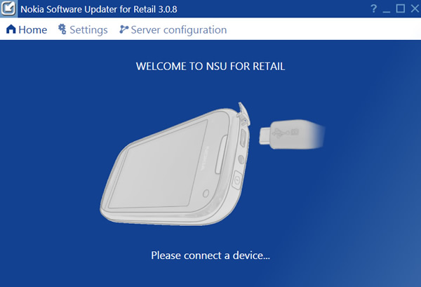

Windows Phone kullanıcısıysanız herhangi bir şekilde internet üzerinden bu güncellemelerden haberdar olmuşsunuzdur. Çünkü Microsoft yaklaşık bir aydan bu yana güncellemeleri cihazlara dağıtmaya başladı. Ancak ülke bazlı olarak veya operatörlerin güncellemeyi geç onaylamalarından dolayı, istatistiklere göre şimdiye kadar piyasanın sadece %20’si güncellemeyi indirebildi.
Operatörlerin güncellemeyi onaylamaları konusunu biraz daha açacak olursam. Şirket kuralları gereği Microsoft GDR2 güncellemesi ile gelen yeni Data Sense özelliğini operatörlerin insafına bıraktı. Neyse ki geçen hafta düzenlenen Nokia Lumia 925 Türkiye lansımanında Türkiye’deki bütün Windows Phone cihazların Data Sense özelliğine sahip olacağı, herhangi bir kısıtlamanın söz konusu olmadığı duyuruldu.
Konumuza geri dönersek, güncelleme geldi mi gelmedi diye OTA (Over the air update) üzerinden günde on kere kontrol ederken, en nihayetinde 46 Mb’lık ne idüğü belirsiz bir güncelleme aldım. GDR2’nin ve Amber’in vaad ettiği hiçbir özellik de gelmemişti. Dolayısıyla hevesi kursağında kalmış biri olarak forumlarda gezerken Nokia Software Updater for Retail adında bir tool’la karşılaştım. NSU kısaca teknik servislerin cihazları sıfırlamak ve temiz kurulum yapmak için kullandıkları bir araç. Bu noktada işin en güzel yanı son kullanıcının da bu yazılıma ulaşabiliyor olması ve Nokia serverlarında GDR2’nin Amber’le birlikte kuruluma hazır olması. GDR2 ve Amber güncellemeleri normal yollarla (OTA üzerinden) sizin cihazınıza ne zaman gelir bilinmez ama, şimdilik bu yöntem ile güncellemeleri anında kurabilirsiniz.
Sıra kurulumda
Dikkat: İşlemin cihazınızın garanti kapsamı dışında kalmasına yol açabileceğini göz önüne almalı ve kurulum esnasında bağlantı kopukluğu olmamasına dikkat etmelisiniz.

Nokia Software Updater’ı kurup çalıştırdıktan sonra cihazınızı bilgisayarınıza bağlayın ve cihaza ait güncelleme olup olmadığını kontrol etmesini bekleyin.
3047.0000.1326.xxxx numaralı güncelleme GDR2 ve Amber’i içeriyor. Kuruluma başlamadan önce dosyalarınızın ve uygulama listenizin yedeklerini almayı unutmayın. Ekranda kullanıcı verilerini silmek için seçenek varmış gibi gözükse de seçimi kaldıramıyorsunuz. Hard reset yapmaya mecbursunuz.
Güncelleme indikten sonar kurulumu için de bir süre beklemeniz gerekiyor.
Ortalama 40 dakika sonra bütün işlemler bitmiş oluyor. Aldığınız yedekleri de geri yükledikten sonra Glance Screen, Data Sense, Fm radio vb. birçok yeni özelliğin tadını çıkarmaya başlayabilirsiniz.